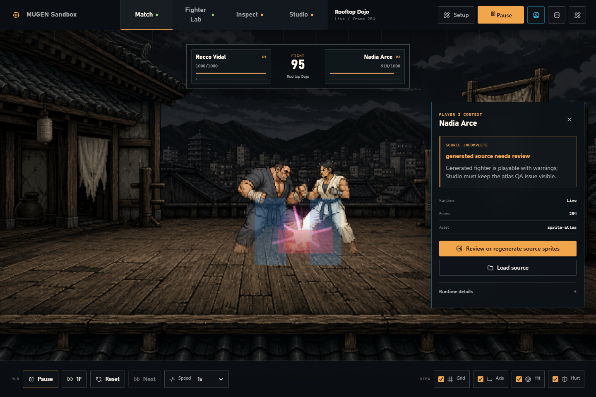
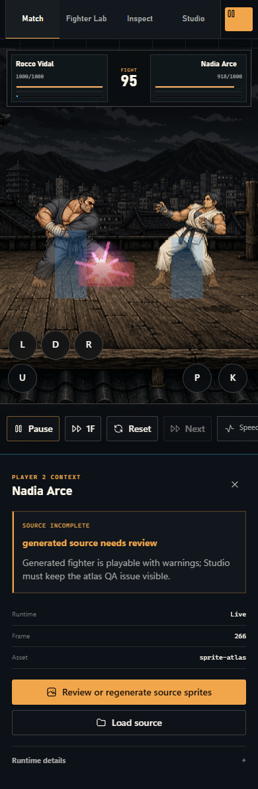
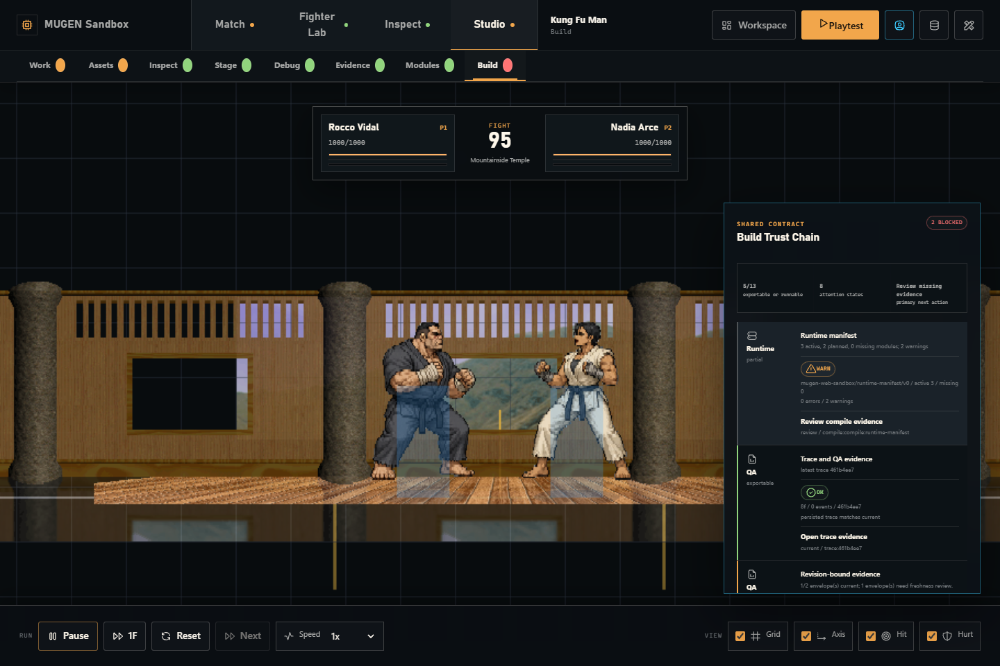

A browser port laboratory
Playable combat.
Inspectable compatibility.
Load local packages, fight in a Three.js runtime, and follow every support claim back to parser, runtime, and evidence.
Current claim: playable local prototype with partial MUGEN compatibility. No full-parity claim.

The compatibility ledger
A support claim crosses three gates.
- 01Parse
Read the package format and preserve diagnostics.
- 02Run
Route behavior through the actual match runtime.
- 03Prove
Attach deterministic traces and browser evidence.
Match runtime
Fight first. Inspect the limits without leaving the stage.
Keyboard and touch controls, local atlas-backed fighters, an original stage, combat state, hit and hurt boxes, round flow, and an optional imported package route.
- Desktop and mobile play surfaces
- Visible source and compatibility warnings
- Local-only package loading

Creator Studio
Build packages with the trust chain in view.
Workbench, assets, inspector, stage, evidence, modules, and build surfaces keep provenance and unresolved compatibility work attached to the project.
Read the current quality audit →
Local first
Start in three commands.
git clone https://github.com/gvastethecreator/threejs-mugen.git
cd threejs-mugen
pnpm install --frozen-lockfile && pnpm dev